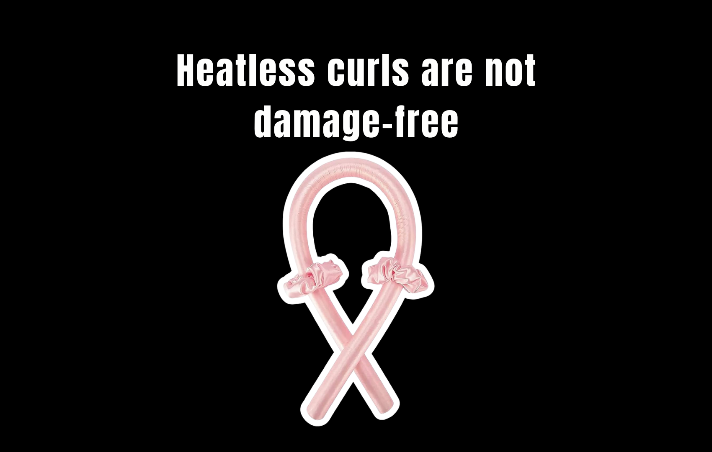
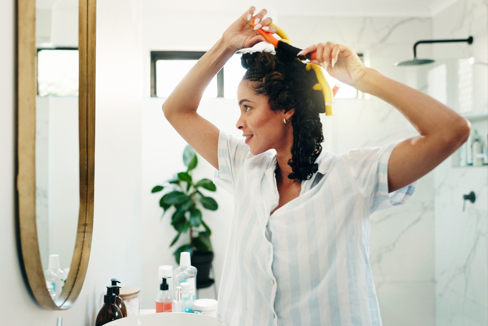
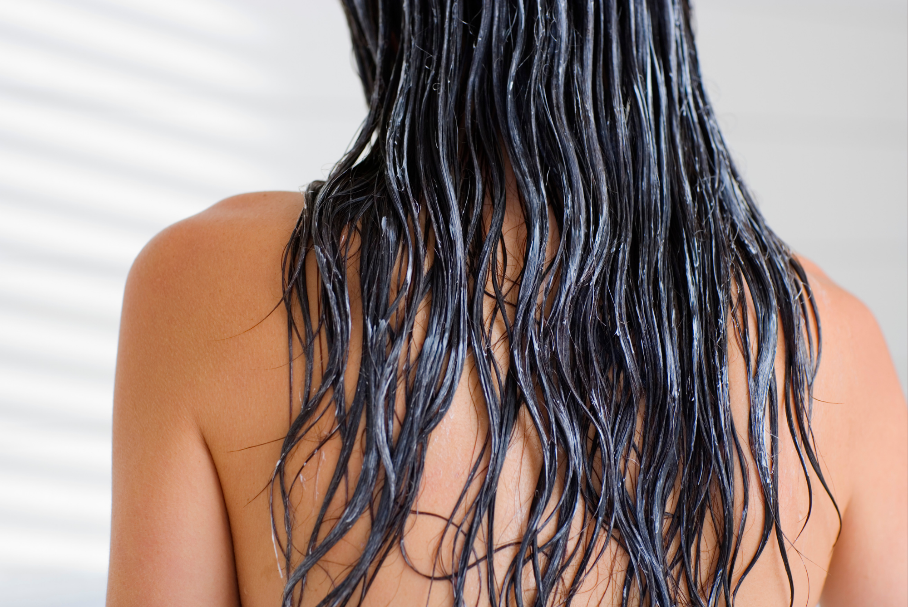

Heatless curls have become the beauty internet’s favorite loophole. No curling iron. No 400°F wand. No sizzling ends. Just wrap your hair around a foam rod, pair of socks, a robe tie, or one of the increasingly elaborate contraptions TikTok has decided we all need, sleep on it, and wake up with curls.
The pitch is simple: You can get the look of heat styling without the damage of heat styling.
And compared with repeatedly putting a hot tool directly onto your hair, there is a pretty obvious reason the trend is appealing. Excessive heat can damage the hair shaft, and dermatologists recommend limiting heat styling when possible. But “less damaging than a curling iron” and “damage-free” are not the same thing.
So we looked at what is actually happening to your hair when you wrap it, sleep on it, pull it out in the morning, and do it all over again. Here’s what the heatless-curl trend gets right — and what the TikTok version leaves out.

The “Heatless” Part Is Legit
Let’s start with the obvious. If your curling routine normally involves holding each section of hair against a hot barrel, heatless curling eliminates the direct thermal exposure.
Hair is made of a protein called keratin, and excessive thermal styling can weaken the hair shaft. Repeated heat exposure can contribute to increased fragility and breakage. Heatless curls don’t require that thermal stress.
So if the choice is: Curling iron every morning vs. loosely wrapping your hair around a soft heatless tool, the heatless method is generally the gentler option.
But this is where the marketing gets a little too enthusiastic. Because your hair doesn’t only experience damage from heat.
Your Hair Can Still Be Damaged Without Heat
Hair doesn’t need to be burning to be under stress. There is also mechanical damage — the wear and tear caused by brushing, pulling, twisting, rubbing, and repeated manipulation. Hair naturally becomes more vulnerable to friction as it ages and its protective outer surface becomes more weathered. Research has found that chemical, thermal, and mechanical processes can all increase hair friction and contribute to damage.
And heatless curls involve a surprising amount of mechanical activity. You section your hair. You wrap it. You twist it. You sleep on it. Then you unwrap it, pull apart the curls, brush or finger-comb them, and potentially repeat the entire process the next night.
None of that means heatless curls are inherently damaging. It means “no heat” does not automatically equal “no damage.”
The Biggest Problem Might Be How You Put Them In
The heatless curling method itself isn’t necessarily the villain. The way you use it can be.
If you’re wrapping your hair so tightly that your scalp feels pulled, you’re introducing unnecessary tension. And if you’re repeatedly putting tension on the same areas, that’s a different type of stress than what you’re trying to avoid with heat. Dermatologists specifically warn that hairstyles that continuously pull on the hair can contribute to breakage and, in cases of prolonged tension, hair loss.
This is particularly relevant to viral methods that require tightly wrapping hair around a central rod or securing multiple sections with clips. The TikTok version often prioritizes how defined the curl looks in the morning. Your hair doesn’t care about your morning reveal. It cares about how much tension you applied at midnight.
And Then There’s Friction
This is the part that tends to disappear from the “damage-free” conversation. A lot of heatless-curl tutorials involve sleeping with something wrapped around your head for six to eight hours. That means movement. Your head moves against your pillow. Your hair moves against the curling tool. Individual strands rub against one another. And if you’re using a rough fabric, tight elastic, metal clip, or anything with a hard edge, you’re adding even more opportunities for friction.
That’s why the material actually matters. A soft satin or silk-covered tool is likely a more hair-friendly choice than something rough or rigid. The American Academy of Dermatology also recommends satin or silk bonnets and pillowcases as ways to reduce friction for curly hair.
The part the trend skips: the “heatless” part is only one piece of the equation. Heatless + gentle + low friction is very different from heatless + tight + abrasive.
Wet Hair Makes the Trend Trickier
Then there is another viral recommendation: doing heatless curls on damp hair. It makes sense in theory. Hair is easier to manipulate when it’s damp, and allowing it to dry around the curling tool can help the shape set.
The problem? Wet hair is more vulnerable to breakage. The American Academy of Dermatology recommends handling wet hair as little as possible because wet hair breaks more easily when combed or manipulated.
That doesn’t mean you can never create heatless curls on damp hair. It means soaking your hair and aggressively wrapping, twisting, pulling, and securing it isn’t exactly a zero-risk activity. There’s a difference between slightly damp hair and hair that’s wet enough to feel stretchy. If your hair is dripping, you’re probably doing more than you need to.

The Viral “Damage-Free” Claim Needs an Asterisk
So, are heatless curls damage-free? No.
But that doesn’t make them a bad idea. The more accurate description would be:
Heatless curls can be a lower-damage alternative to frequent hot-tool styling, but they aren’t completely damage-free.
That’s a much less exciting TikTok caption. It also happens to be more accurate. If you’re replacing daily curling-iron use with a loose, soft heatless method, you’re probably reducing your exposure to one significant source of hair damage.
If you’re wrapping your hair tightly around a stiff tool every night, sleeping in it, ripping it out in the morning, and brushing through the curls aggressively, you’ve simply traded one form of mechanical stress for another.
The Heatless Curling Methods We Would Actually Trust
Not every method deserves the same “gentle” label.
Satin or Silk Curling Rods
Soft, flexible rods covered in smooth material can create curls without requiring direct heat or particularly aggressive manipulation. The key is not to wrap them so tightly that your scalp feels uncomfortable. If you wake up with a headache, that’s not a sign that the curls are working. It’s a sign you wrapped them too tightly.
The Robe-Tie Method
The robe-tie method became one of the original viral heatless-curl techniques for a reason: you probably already own everything you need. But a bathrobe tie isn’t necessarily designed for hair. If it’s bulky, rough, or you’re wrapping your hair extremely tightly around it, the method isn’t automatically gentle just because there isn’t a curling iron involved.
Socks
Yes, people really are putting their hair around socks and waking up with curls. And honestly, the basic concept works. The issue is friction and tension. Smooth, clean, soft fabric is preferable to anything rough or heavily textured. Also, maybe don’t use the socks you’ve been wearing all day. We shouldn’t have to explain this one.
Clips and More Complicated Viral Methods
Some newer heatless methods involve multiple clips, pins, or tightly secured sections. That can create a more controlled curl pattern, but more hardware also means more opportunities for snagging, pulling, and friction. One viral heatless curling method involving numerous clips even prompted hairstylists to raise concerns about potential hair damage from the clips themselves. The lesson isn’t “never use clips.” It’s that heatless doesn’t magically make every accessory hair-safe.
So What Actually Causes the Least Damage?
If your goal is healthy hair rather than the most dramatic overnight curl, the formula is surprisingly boring.
- Keep the hair mostly dry or only slightly damp
- Use a soft, smooth curling tool
- Don’t pull tightly at the roots
- Avoid sharp clips or anything that snags
- Don’t aggressively brush the curls apart in the morning
- Don’t assume that because a method worked beautifully once, doing it every single night is automatically harmless
Your hair experiences the cumulative effect of your habits. The American Academy of Dermatology recommends minimizing excessive styling and avoiding practices that place prolonged tension on the hair.
The Bottom Line
Heatless curls aren’t a scam. They’re also not magic. The biggest truth TikTok gets right is that removing heat can remove one major source of hair damage. The biggest thing it gets wrong is turning that into “damage-free.”
Your hair can be damaged by heat, but it can also be damaged by friction, tension, rough handling, and repeated manipulation. So if you love your overnight curls, keep them. Just loosen the wrap, choose a smoother material, be gentle when you take it out, and give your hair a break when it needs one. Because the goal shouldn’t be finding a way to style your hair with zero consequences. It should be finding the styling method that gives you the look you want while asking the least from your hair.
Truth Behind Beauty Verdict: ⚠️ Partly True
The heatless part is real. Skipping the hot tool removes direct thermal stress from the equation, and for anyone curling daily with a wand, that is a meaningful reduction in one major source of damage.
What doesn’t hold up is “damage-free.” Tension at the roots, friction against a pillow for eight hours, rough materials, and wrapping soaking-wet hair are all still mechanical stress. The method isn’t the variable that matters most — how tightly you wrap it, what it’s made of, and how you take it out are.
Heatless? Yes. Damage-free? Not quite.
And that’s the part the viral tutorial conveniently leaves out.